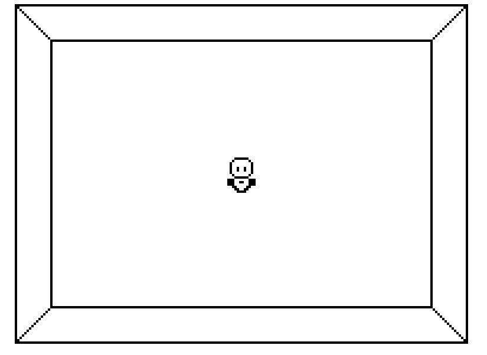

Web Navi

Web-Navi is a small game that allows you to explore the net and encounter other navis as you go. Some pages are older than others, some are missing links, and some may have navis with stories to share.
The game is currently unfinished, but will be updated as time permits. It was made in a bout of motivation for playing with new tools and exists a bit as a reminder of ambition and to keep an eye on it.